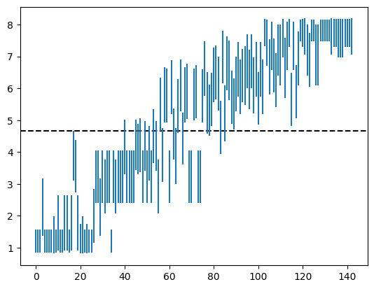

Hexbot Part 4: Did It Work?
Measuring the strength of our AlphaZero-style bot
This is the final post in a series of posts about my foray into building a bot to play Hex. The focus of this post is on quantifying the strength of our shiny new bot, plus some miscellaneous followups.
Hexbot Part 1: The 101 Unit
Hexbot Part 2: The Board and Our First Bot
Hexbot Part 3: Using Neural Networks
Hexbot Part 4: Did It Work?
Now that we’ve trained up a neural network to play Hex, it would be nice to know if our effort (and cloud computing bill) have paid off, and there are a number of things we can do to get some insight here.
The first is to simply play against the bot to get a qualitative sense for how well it plays. I’ve played a few games against it and while I’m still kind of a beginner, it’s clearly much stronger than me.1 I copied the moves between it and the “Impossible” CPU in Clubhouse Games and it won. Both of these with the model playing as the second player without the swap rule, and with 2 seconds of thinking time per turn. Neither of these achievements is very impressive though (even the Clubhouse Games “Impossible” difficulty is still pretty weak in the grand scheme of Hex-playing programs) and they don’t tell us much about the bot’s strength quantitatively.2
Benchmarking against MCTS
In part 2 we noted that the strength of MCTS can be configured by changing the number of search iterations, i.e. the number of rollouts. Thus, we might ask how many rollouts are required for MCTS to play at roughly the same strength as our bot. Furthermore, we can check if this number actually increased over the course of training, and at what rate.
As described in part 3, the purpose of the neural network is to augment an MCTS search with a value function and a prior over available moves, but we can actually just use the prior (i.e. the policy) directly, evaluating the current board once and immediately picking the move considered “most likely” instead of searching the tree deeper. By finding the MCTS configuration that wins about half of its games against this type of model-only strategy, we can get a sense for the amount of “MCTS knowledge” contained within a model checkpoint.
In principle we could run hundreds or thousands of games at different MCTS strengths, but each game can take minutes to run so we would like to need as few as them as possible since we have 142 checkpoints to evaluate. Instead we can use Bayesian inference on a distribution over a range of MCTS strengths, where the likelihood is given by the win rate predictor we calibrated in part 2. The prior informs the choice of which strength to try next, then we calculate the mean and variance of the posterior distribution after a number of experiments have been run.
The result of this analysis is the following plot:

The X axis is checkpoint index (correlating roughly with training time) and the Y axis is the MCTS strength ( of rollout count) required to get a roughly 50/50 win rate against the checkpoint playing in model-only mode. (The dashed line marks the MCTS strength where the amount of time spent thinking is the same for MCTS and a model-only move.) The Y axis stops at 8 because 100,000,000 rollouts is already quite a lot for my laptop to handle and the analysis would take way too long if the MCTS were allowed to think any longer. Clearly the latest checkpoints are much stronger than pure MCTS!
Generalized benchmarking
The same type of analysis from the last section can be extended to any two Hex-playing programs, since we have a single configuration axis we can use for all of them: thinking time. That is, instead of asking how many rollouts are required for pure MCTS to play at the same strength as a model checkpoint, we can ask what ratio of thinking time is required for two programs to play at the same strength.3
With this in mind, an interesting thing we can try is to train a smaller model on the self-play data generated when training a bigger one. A small model needs less time to think for the same number of search iterations, so it might actually need less time to play at the same level.
To test this out, I ran the optimizer for a much smaller model (about 6x smaller)
using the same self-play data as generated for the model we’ve been using until
now, then benchmarked it against the bigger model trained on the same data.
Unsurprisingly, the smaller model plays just as well, and much more quickly!
This is the models/model-v0-16-8-64-20260514 file in the repo, which when
benchmarked against the v0-16-32-256 model comes in around 10x faster for the
same level of gameplay. (I’m training a 12-16-64 model and it’s even stronger.
I think 24 hours wasn’t enough for the big model!)
What’s next?
This is the end of this series of blog posts at least. I might write some additional posts if I do anything else interesting that I feel like sharing, but this first iteration is done for now.
As far as the project itself, I feel like I’ve mostly gotten what I wanted out of it. I had a lot of fun and learned a lot along the way, and got a pretty decent Hex-playing program out of it too! There are a number of additional directions this project could go that I might go in if I feel up to it someday:
Hinted at in the previous section, there’s still room to optimize thinking time by training smaller models. At some point the model is too small to play well, but it would be interesting to try to find this point.
Every time we do a search, we start with an empty move tree. However, it’s possible to reuse the previous move tree, thus saving some computation, especially for moves that were expected (and thus have well-explored subtrees). A bot can also be programmed to “ponder”, i.e. to think while it’s the opponent’s turn to play. For simplicity I chose not to introduce either of these things when evaluating bot strength, but for the strongest possible play these are important (and straightforward) optimizations.
The big training run only went for 24 hours. While the resulting model maxed out our MCTS benchmark, there’s no reason to believe it’s as strong as it will ever be for that model size. Unfortunately, training is time-consuming and expensive, so I’m not very keen on digging much deeper here unless a bunch of GPUs fall in my lap. (Also, I would want to get CUDA and quantization working before I do that.) Some experimentation here with a
12-16-64model is producing some good results, and I’m going to keep pushing it until it seems like it’s topping out.Our model can only play 11x11 Hex without the swap rule, but “real” Hex bots like KataHex can play on a variety of board sizes with or without the swap rule.
We only explored pure MCTS and AlphaZero-style MCTS, but there are many other ways to write a Hex-playing program! Claude Shannon built an analog Hex-playing device that used features of an electric potential field to choose moves. It would be interesting to try some other architectures and to benchmark them against the ones we have.
The UI,
bin/play.rs, is not very good! A more full-featured UI, with configurable bot players, time controls, analysis features, etc. would be nice to have around. (Maybe you could benchmark yourself against the AI!)
But I think for now I’m going to take a break. I’m starting to see hexagons whenever I close my eyes.
If you’d like to play against it yourself, you can check out the code at https://github.com/aji/hex-table and run
cargo run --release --bin play -F ui,candle -- --model models/model-v0-16-32-256-20260510but the UI is not very good at the moment :( I’m not sure if I’ll ever get around to making it better, but I hope to!↩︎A more interesting followup would be to set up some tournaments or leagues with much more established bots like MoHex or KataHex. This is a lot of work to set up though and I might get around to it someday. I would be surprised if my little bot does very well but I won’t know for sure until I try.↩︎
There are a lot of assumptions buried in here. For example, we’re assuming that the relative change in strength due to extra thinking time is roughly the same for all programs, that the strength difference between 2 minutes and 1 minute is the same as the difference between 2ms and 1ms, etc.↩︎